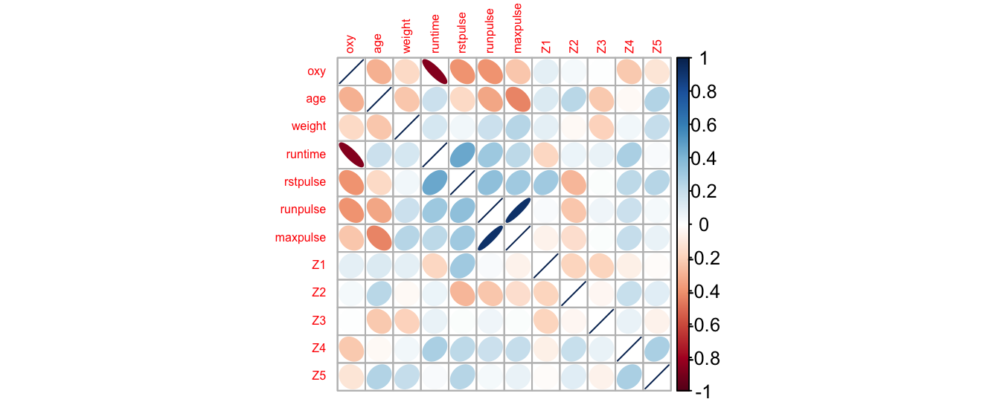
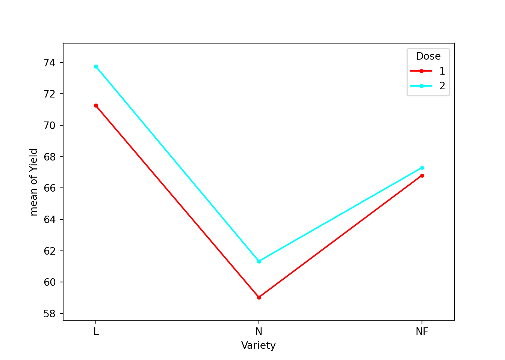

Chapitre 6 La régression linéaire
Les slides associés à la régression linéaire sont disponibles ici SlidesRegLineaire.pdf
Le jeu de données utilisé dans ce chapitre est disponible ici fitness.txt
6.1 Introduction
6.1.1 Exemple illustratif
Pour illustrer les notions abordées dans ce chapitre, nous allons considérer l’exemple suivant : on mesure pour 31 personnes lors de séances d’aérobic les \(7\) variables suivantes :
- age (a): age
- weight (w): poids
- oxy (oxy): consommation d’oxygène
- runtime (run): temps de l’effort
- rstpulse (rst): mesure de pulsation cardiaque 1
- runpulse (rp): mesure de pulsation cardiaque 2
- maxpulse (maxp): mesure de pulsation cardiaque 3
age weight oxy runtime rstpulse runpulse maxpulse
1 44 89.47 44.609 11.37 62 178 182
2 40 75.07 45.313 10.07 62 185 185
3 44 85.84 54.297 8.65 45 156 168
4 42 68.15 59.571 8.17 40 166 172
5 38 89.02 49.874 9.22 55 178 180
6 47 77.45 44.811 11.63 58 176 176L’objectif est d’étudier si la consommation d’oxygène (variable réponse \(Y\)=oxy) peut être expliquée linéairement par les \(6\) autres variables quantitatives.
Quelques statistiques descriptives sont données ci-dessous. Les boxplots et les corrélations deux à deux entre les variables quantitatives sont représentés sur la Figure 6.1
Figure 6.1: Description des données. A gauche, boxplot des différentes variables quantitatives. A droite, représentation graphique des corrélations deux à deux des variables quantitatives.
6.1.2 Problématique
La régression est une des méthodes les plus connues et les plus appliquées en statistique pour l’analyse des données quantitatives. Elle est utilisée pour établir une liaison entre une variable quantitative, et une ou plusieurs autres variables quantitatives, sous la forme d’un modèle.
Si on s’intéresse à la relation entre deux variables (par exemple, la consommation d’oxygène oxy en fonction du temps de l’effort runtime), on parlera de régression simple en exprimant une variable en fonction de l’autre. Si la relation porte entre une variable et plusieurs autres variables (par exemple, la variable oxy fonction de toutes les autres variables quantitatives), on parlera de régression multiple. La mise en oeuvre d’une régression impose l’existence d’une relation de cause à effet entre les variables prises en compte dans le modèle.
Cette méthode peut être mise en place sur des données quantitatives observées sur \(n\) individus et présentées sous la forme :
- une variable quantitative \(Y\) prenant la valeur \(Y_i\) pour l’individu \(i, i=1,\cdots, n\) appelée variable à expliquer ou variable réponse,
- \(p\) variables quantitatives \(z^{(1)}, z^{(2)}, \cdots, z^{(p)}\) prenant respectivement les valeurs \(z^{(1)}_i, z^{(2)}_i, \cdots, z^{(p)}_i\) pour l’individu \(i\), appelées variables explicatives ou prédicteurs. Si \(p=1\), on est dans le cas de la régression simple.
Dans notre exemple, \(n=31\), \(Y\) est la variable oxy et \(p=6\).
Considérons un couple de variables quantitatives \((Y,Z)\). S’il existe une liaison entre ces deux variables, la connaissance de la valeur prise par \(Z\) change notre incertitude concernant la réalisation de \(Y\). Si l’on admet qu’il existe une relation de cause à effet entre \(Z\) et \(Y\), le phénomène représenté par \(Z\) peut donc servir à prédire celui représenté par \(Y\) et la liaison s’écrit sous la forme \(y=f(z)\). On dit que l’on fait de la régression de \(Y\) sur \(Z\).
Dans le cas les plus fréquents, on choisit l’ensemble des fonctions affines (du type \(f(z)=\theta_0 + \theta_1 z\) ou \(f(z^{(1)},z^{(2)},\cdots,z^{(p)})=\theta_0+\theta_1z^{(1)}+\theta_2z^{(2)}+\cdots+\theta_p z^{(p)}\)) et on parle de régression linéaire.
6.1.3 Le modèle de régression linéaire simple
Soit un échantillon de \(n\) individus. Pour un individu \(i\) \((i=1,\cdots,n)\), on a observé
- \(Y_i\) la valeur de la variable quantitative \(Y\) (ex: la consommation d’oxygène oxy),
- \(z_i\) la valeur de la variable quantitative \(z\) (ex: le temps d’effort runtime)
On veut étudier la relation entre ces deux variables, et en particulier, l’effet de \(z\) (variable explicative) sur \(Y\) (variable réponse). Dans un premier temps, on peut représenter graphiquement cette relation en traçant le nuage des \(n\) points de coordonnées \((z_i,Y_i)_{1\leq i \leq n}\) (cf Figure 6.2). Dans le cas où le nuage de points est de forme “linéaire”, on cherchera à ajuster ce nuage de points par une droite. La relation entre \(Y_i\) et \(z_i\) s’écrit alors sous la forme d’un modèle de régression linéaire simple : \[\begin{equation} \left\{ \begin{array}{l} Y_i=\theta_0+\theta_1z_i +\varepsilon_i, \, \forall i =1,\cdots, n, \\ \\ \varepsilon_1,\ldots,\varepsilon_n \textrm{ i.i.d de loi } \mathcal{N}(0,\sigma^2) \end{array}\right. \tag{6.1} \end{equation}\]
La première partie du modèle \(\theta_0+\theta_1z_i\) représente la moyenne de \(Y_i\) sachant \(z_i\) et la seconde partie \(\varepsilon_i\), la différence entre cette moyenne et la valeur \(Y_i\). Le nuage de points est résumé par la droite d’équation \(y=\theta_0+\theta_1z\).
Figure 6.2: Représentation du oxy en fonction de runtime. En rouge, la droite de régression linéaire simple ajustée.
6.1.4 Le modèle de régression linéaire multiple
On dispose d’un échantillon de \(n\) individus pour lesquels on a observé
- \(Y_i\) la valeur de la variable réponse \(Y\) quantitative (ex: variable oxy),
- \(z^{(1)}_i, \cdots, z^{(p)}_i\) les valeurs de \(p\) autres variables quantitatives \(z^{(1)},\cdots,z^{(p)}\).
On veut expliquer la variable quantitative \(Y\) par les \(p\) variables quantitatives \(z^{(1)},\cdots,z^{(p)}\). Le modèle s’écrit \[\begin{equation} \left\{\begin{array}{l} Y_i=\theta_0+\theta_1z^{(1)}_i+\cdots, +\theta_pz^{(p)}_i+\varepsilon_i, \forall i=1,\cdots, n,\\ \\ \varepsilon_1,\ldots,\varepsilon_n \textrm{ i.i.d de loi } \mathcal{N}(0,\sigma^2) \end{array}\right. \tag{6.2} \end{equation}\]
6.2 Estimation
6.2.1 Résultats généraux
Le modèle (6.2) peut se réécrire sous la forme matricielle
\[ \underbrace{\left(\begin{array}{c} Y_1 \\ Y_2 \\ \vdots \\ Y_n \end{array}\right)}_{Y} = \underbrace{\left(\begin{array}{c c c c c } 1& z_1^{(1)}& z_1^{(2)}& \ldots& z_1^{(p)}\\ 1& z_2^{(1)}& z_2^{(2)}& \ldots& z_2^{(p)}\\ \vdots&\vdots &\vdots &\vdots & \vdots\\ 1& z_n^{(1)}& z_n^{(2)}& \ldots& z_n^{(p)} \end{array}\right)}_{X} \underbrace{\left(\begin{array}{c} \theta_0\\ \theta_1\\ \vdots \\ \theta_p\end{array}\right)}_{\theta} + \underbrace{\left(\begin{array}{c} \varepsilon_1 \\ \varepsilon_2 \\ \vdots \\ \varepsilon_n \end{array}\right)}_{\varepsilon} \]
où \(X \in \mathcal{M}_{n,p+1}(\mathbb{R})\) (ici, \(k=p+1\)). Si le modèle est régulier, on peut alors estimer le vecteur des paramètres \(\theta\) par la méthode des moindres carrés d’où \[ \widehat{\theta}=(X'X)^{-1}X'Y \sim \mathcal{N}_{p+1}(\theta,\sigma^2(X'X)^{-1}). \] On en déduit alors \(\widehat{Y}_i=(X \widehat{\theta})_i = \widehat{\theta}_0+\sum_{j=1}^p\widehat{\theta}_j z^{(j)}_i\) la valeur ajustée de \(Y_i\) et le résidu \(\widehat{\varepsilon_i}=Y_i-\widehat{Y_i}\).
La variance \(\sigma^2\) est estimée par \[\widehat{\sigma}^2=\frac{\|Y - X \widehat{\theta}\|^2}{n-(p+1)}= \frac{1}{n-(p+1)}\sum_{i=1}^n \left(\widehat{\varepsilon_i}\right)^2.\]
Les erreurs standards des estimateurs \(\widehat{\theta_0}, \cdots, \widehat{\theta_p}\), des valeurs ajustées et des résidus calculés valent:
- erreur standard de \(\widehat{\theta_j}\) vaut \(se(\widehat{\theta_j}) = \sqrt{\widehat{\sigma^2}[(X'X)^{-1}]_{j+1,j+1}}\)
- erreur standard de \(\widehat{Y_i}\) vaut \(se(\widehat{Y_i})= \sqrt{\widehat{\sigma^2}[X(X'X)^{-1}X']_{ii}}=\sqrt{\widehat{\sigma^2}H_{ii}}\)
- erreur standard de \(\widehat{\varepsilon_i}\) vaut \(se(\widehat{\varepsilon_i}) = \sqrt{\widehat{\sigma^2}(1-H_{ii})}.\)
Exercise 6.1 On se place dans le cadre de la régression linéaire simple d’équation (6.1). Montrez que les estimateurs de \(\theta_0\) et \(\theta_1\) par la méthode des moindres carrés sont donnés par : \[\left\lbrace \begin{array}{l} \widehat{\theta}_1 = \displaystyle \frac{cov(Y,z)}{ var(z)}=\frac{\strut \sum\limits_{i=1}^n(z_i - \overline{z}) (Y_i - \overline{Y})}{\sum\limits_{i=1}^n (z_i - \overline{z})^2 \strut},\\ \widehat{\theta}_0 = \overline{Y} - \widehat{\theta}_1 \, \overline{z}, \end{array} \right.\] où \(\overline{z}=\frac{1}{n}\sum_{i=1}^n z_i\) et \(\overline{Y}=\frac{1}{n}\sum_{i=1}^n Y_i\).
Pour cela, on cherche à minimiser la fonction des moindres carrés \[ (a,b) \mapsto \sum_{i=1}^n (Y_i - a - b z_i)^2. \]
6.2.1.1 Exemple en régression linéaire simple
Sous R, on peut ajuster le modèle de régression linéaire à l’aide de la fonction lm()avec la syntaxe suivante :
Call:
lm(formula = oxy ~ runtime, data = fitness)
Residuals:
Min 1Q Median 3Q Max
-5.3352 -1.8424 -0.0569 1.5342 6.2033
Coefficients:
Estimate Std. Error t value Pr(>|t|)
(Intercept) 82.4218 3.8553 21.379 < 2e-16 ***
runtime -3.3106 0.3612 -9.166 4.59e-10 ***
---
Signif. codes: 0 '***' 0.001 '**' 0.01 '*' 0.05 '.' 0.1 ' ' 1
Residual standard error: 2.745 on 29 degrees of freedom
Multiple R-squared: 0.7434, Adjusted R-squared: 0.7345
F-statistic: 84.01 on 1 and 29 DF, p-value: 4.585e-10On a en particulier \((\widehat{\theta}_0)^{obs} =\) 82.422 et \((\widehat{\theta}_1)^{obs} =\) -3.311 ainsi que leur erreur standard dans la colonne suivante.
Sur le nuage de point, on obtient donc l’ajustement de la droite de régression linéaire en rouge
6.2.1.2 Exemple en régression linéaire multiple
Les résultats obtenus avec la commande lm() pour l’exemple de la régression linéaire multiple sont donnés ci-dessous. Les deux premières colonnes correspondent aux estimations et aux erreurs standards respectivement pour chaque paramètre.
Call:
lm(formula = oxy ~ ., data = fitness)
Residuals:
Min 1Q Median 3Q Max
-5.4026 -0.8991 0.0706 1.0496 5.3847
Coefficients:
Estimate Std. Error t value Pr(>|t|)
(Intercept) 102.93448 12.40326 8.299 1.64e-08 ***
age -0.22697 0.09984 -2.273 0.03224 *
weight -0.07418 0.05459 -1.359 0.18687
runtime -2.62865 0.38456 -6.835 4.54e-07 ***
rstpulse -0.02153 0.06605 -0.326 0.74725
runpulse -0.36963 0.11985 -3.084 0.00508 **
maxpulse 0.30322 0.13650 2.221 0.03601 *
---
Signif. codes: 0 '***' 0.001 '**' 0.01 '*' 0.05 '.' 0.1 ' ' 1
Residual standard error: 2.317 on 24 degrees of freedom
Multiple R-squared: 0.8487, Adjusted R-squared: 0.8108
F-statistic: 22.43 on 6 and 24 DF, p-value: 9.715e-096.2.2 Propriétés en régression linéaire simple
On se place dans cette section dans le cadre de la régression linéaire simple (cf Equation (6.1)). La proposition suivante donne des propriétés entre les résidus et les valeurs prédites par le modèle.
Proposition 6.1 Les résidus et les valeurs prédites vérifient les propriétés suivantes
- \(\sum_{i=1}^n \widehat{\varepsilon_i } = 0\), \(\sum_{i=1}^n \widehat{Y_i } = \sum_{i=1}^n Y_i\).
- La droite de régression passe par le point de coordonnées \((\overline z, \overline Y)\).
- Le vecteur des résidus n’est pas corrélé avec la variable explicative : \(cov(z, \widehat{\varepsilon})=0\).
- Le vecteur des résidus n’est pas corrélé avec la variable ajustée : \(cov(\widehat{Y},\widehat{\varepsilon})=0\).
- La variance de \(Y\) admet la décomposition : \[\begin{equation} \tag{6.3} var(Y)=var(\widehat{Y})+ var(\widehat{\varepsilon}). \end{equation}\]
- Le carré du coefficient de corrélation de \(z\) et de \(Y\) s’écrit sous les formes suivantes : \[r^2(z,Y)=\frac{var(\widehat{Y})}{var(Y)}= 1- \frac{var(\widehat{\varepsilon})}{var(Y)}.\] On en déduit que la variance empirique de \(Y\) se décompose en somme d’une part de variance expliquée \((var(\widehat{Y}))\) et d’une variance résiduelle \((var(\widehat{\varepsilon}))\), et que \(r^2(z,Y)\) est le rapport de la variance expliquée sur la variance de la variable à expliquer.
Proof. En utilisant que \(\widehat\varepsilon_i = Y_i - \widehat{Y}_i\), \(\widehat{Y_i } = \widehat{\theta_0} + \widehat{\theta_1} z_i\) et \(\widehat{\theta_0} = \bar Y - \widehat{\theta_1} \bar z\), on a
- \(\frac 1 n \sum_{i=1}^n \widehat{\varepsilon_i } = \frac 1 n \sum_{i=1}^n \left\{Y_i - [\widehat\theta_0 + \widehat\theta_1 z_i] \right\} = \bar Y - \widehat\theta_0 - \widehat\theta_1 \bar z = 0\) par définition de \(\widehat\theta_0\).
- \(\widehat\theta_0 + \widehat\theta_1 \bar z = \left[\bar Y - \widehat\theta_1 \bar z \right] + \widehat\theta_1 \bar z =\bar Y\)
- On a \[\begin{eqnarray*} n\ cov(z,\widehat\varepsilon) &=& \sum_{i=1}^n \widehat\varepsilon_i (z_i - \bar z)\\ &=& \sum_{i=1}^n [Y_i - \bar Y - \widehat{\theta}_1(z_i - \bar z)][z_i - \bar z]\\ &=& n\, \left\{cov(Y,z) - \widehat{\theta}_1var(z)\right\} = 0 \end{eqnarray*}\] par définition de \(\widehat\theta_1\).
- \(n\ cov(\widehat Y, \widehat\varepsilon) = \sum_{i=1}^n \widehat\varepsilon_i (\widehat Y_i -\bar Y) = \sum_{i=1}^n \widehat\varepsilon_i \widehat\theta_1 (z_i - \bar z) = n \widehat\theta_1 cov(z,\widehat\varepsilon) = 0.\)
- \(n\, var(Y) = \sum_{i=1}^n (Y_i - \widehat Y_i + \widehat Y_i - \bar Y)^2 = n\, var(\widehat\varepsilon) + n\, var(\widehat Y) + 2 n\, cov(\widehat\varepsilon,\widehat Y).\)
- On a \(r^2(z,Y) = \frac{cov(z,Y)^2}{var(z) var(Y)}\) et
\[
n\, cov(z,Y) = \sum_{i=1}^n (Y_i -\widehat Y_i + \widehat Y_i - \bar Y) (z_i - \bar z) = n\,cov(\widehat\varepsilon,z) + n\, cov(\widehat Y,z) = n\, cov(\widehat Y,z).
\]
Ainsi, \[r^2(z,Y) = \frac{cov(\widehat Y, z)^2}{var(z) var(\widehat Y)} \frac{var(\widehat Y)}{var(Y)} = cor(\widehat Y,z)^2 \frac{var(\widehat Y)}{var(Y)} = \frac{var(\widehat Y)}{var(Y)}\]
car \(\widehat Y_i = \widehat\theta_0 + \widehat \theta_1 z_i, \forall i\) (relation linéaire).
6.2.3 Le coefficient \(R^2\)
6.2.3.1 Définition
Le coefficient \(R^2\), défini comme le carré du coefficient de corrélation de \(z\) et \(Y\) est une mesure de qualité de l’ajustement, égale au rapport de la variance effectivement expliquée sur la variance à expliquer : \[R^2= r^2(z,Y)=\frac{var(\widehat{Y})}{var(Y)}.\] Ainsi \(R^2 \in [0,1]\) et s’interprète comme la proportion de variance expliquée par la régression.
La plupart des logiciels n’utilise pas la décomposition (6.3), mais plutôt la décomposition obtenue en multipliant cette expression par \(n\) : \[SST = SSE + SSR\] où
- \(\displaystyle SST = \|Y - \overline Y \mathbb{1}_n\|^2=\sum_{i=1}^n (Y_i-\overline Y)^2\) est la somme totale des carrés corrigés de \(Y\),
- \(\displaystyle SSE =\|\widehat{Y}-\overline Y \mathbb{1}_n\|^2= \sum_{i=1}^n (\widehat{Y_i}-\overline Y)^2\) est la somme des carrés expliquée par le modèle,
- \(\displaystyle SSR =\|Y - \widehat{Y}\|^2= \sum_{i=1}^n (\widehat{\varepsilon_i})^2\) est la somme des carrés des résidus.
Ainsi, pour calculer le \(R^2\), on utilise également l’expression \[R^2= \frac{SSE}{SST}= 1- \frac{SSR}{SST}.\]
Dans l’exemple de la régression linéaire simple, la valeur du \(R^2\) vaut \(0.8078\). Pour retrouver les valeurs de \(SST\), \(SSR\) et \(SSE\), on peut utiliser la commande anova().
Analysis of Variance Table
Response: oxy
Df Sum Sq Mean Sq F value Pr(>F)
runtime 1 632.90 632.90 84.008 4.585e-10 ***
Residuals 29 218.48 7.53
---
Signif. codes: 0 '***' 0.001 '**' 0.01 '*' 0.05 '.' 0.1 ' ' 1Dans le cas d’une régression multiple de \(Y\) par \(z^{(1)}, \cdots, z^{(p)}\), le coefficient de corrélation multiple noté \(r(Y,z^{(1)},\cdots,z^{(p)})\) est défini comme le coefficient de corrélation linéaire empirique de \(Y\) par \(\widehat{Y}\) : \[r(Y,z^{(1)}, \cdots, z^{(p)})=r(Y,\widehat{Y}).\] Ainsi le coefficient \(R^2\) de la régression multiple est égal au carré du coefficient de corrélation linéaire multiple empirique \(r(Y,z^{(1)}, \cdots, z^{(p)})\). Dans l’exemple de la régression linéaire multiple, la valeur du \(R^2\) vaut 0.849.
6.2.3.2 Augmentation mécanique du \(R^2\)
Lorsque l’on ajoute une variable explicative à un modèle, la somme des carrés des résidus diminue ou au moins reste stable. En effet, si on considère un modèle à \(p-1\) variables : \[Y_i=\theta_0+\theta_1z^{(1)}_i + \cdots + \theta_{p-1}z^{(p-1)}_i + \varepsilon_i\] alors les coefficients \((\widehat{\theta}_0, \widehat{\theta}_1, \cdots, \widehat{\theta}_{p-1})\) estimés minimisent \[\phi(\theta_0,\theta_1, \cdots, \theta_{p-1})=\sum_{i=1}^n\left[Y_i-(\theta_0+\theta_1z^{(1)}_i + \cdots + \theta_{p-1}z^{(p-1)}_i)\right]^2.\] Si on rajoute une nouvelle variable explicative \(z^{(p)}\) au modèle, on obtient \[Y_i=\theta_0+\theta_1z^{(1)}_i + \cdots + \theta_{p-1}z^{(p-1)}_i + \theta_pz^{(p)}_i+ \varepsilon_i,\] et les coefficients estimés, notés \((\widetilde{\theta}_0, \widetilde{\theta}_1, \cdots, \widetilde{\theta}_p)\) minimisent la fonction : \[\tilde\psi(\theta_0,\theta_1, \cdots, \theta_p)=\sum_{i=1}^n\left[Y_i-(\theta_0+\theta_1z^{(1)}_i + \cdots + \theta_pz^{(p)}_i)\right]^2\] qui, par construction, vérifie l’égalité : \[\tilde\psi(\theta_0,\theta_1, \cdots, \theta_{p-1},0)=\phi(\theta_0,\theta_1, \cdots, \theta_{p-1}).\] D’où l’inégalité : \[\tilde\psi(\widetilde{\theta}_0,\widetilde{\theta}_1, \cdots, \widetilde{\theta}_p) \leq \tilde\psi(\widehat{\theta}_0,\widehat{\theta}_1, \cdots, \widehat{\theta}_{p-1},0) = \phi(\widehat{\theta}_0,\widehat{\theta}_1, \cdots, \widehat{\theta}_{p-1}).\] Ceci prouve l’augmentation “mécanique” du \(R^2\) sans pour autant améliorer le modèle, comme nous le verrons par la suite.
6.3 Tests et intervalles de confiance
6.3.1 Test de nullité d’un paramètre du modèle
En testant l’hypothèse nulle \(\mathcal{H}_0^{(j)} : \theta_j=0\) où \(\theta_j\) est le paramètre associé à la variable explicative \(z^{(j)}\), on étudie l’effet de la présence de la variable explicative \(z^{(j)}\).
Pour tester \(\mathcal{H}_0^{(j)} : \theta_j = 0\) contre \(\mathcal{H}_1^{(j)} : \theta_j\neq 0\), on met en place un test classique de Student.
- On estime \(\theta\) par l’EMC \(\widehat{\theta}\) donc \(\theta_j\) est estimé par \(\widehat{\theta}_j\)
- Comme \(\widehat{\theta}\sim\mathcal{N}_k(\theta,\sigma^2 (X'X)^{-1})\), on a \(\widehat{\theta}_j\underset{\mathcal{H}_0}{\sim} \mathcal{N}(0,\sigma^2 [(X'X)^{-1}]_{jj})\)
- On estime \(\sigma^2\) par \(\widehat{\sigma}^2= \frac{\|Y - X \widehat\theta\|^2}{n-k}\)
- D’après Cochran, \(\frac{(n-k)\widehat{\sigma}^2}{\sigma^2}\sim \chi^2(n-k)\) et \(\widehat{\theta}_j\) et \(\widehat{\sigma}^2\) sont indépendants.
- Ainsi la statistique de test \[ T_j := \frac{\widehat\theta_j}{\sqrt{\widehat{\sigma}^2 [(X'X)^{-1}]_{jj}}}\underset{\mathcal{H}_0}{\sim} \mathcal{T}(n-k) \]
- La zone de rejet est de la forme \[ \mathcal{R}_\alpha = \left\{|T_j|> t_{1-\alpha/2,n-k}\right\} \] où \(t_{1-\alpha/2,n-k}\) est le \(1-\alpha/2\) quantile de la loi de Student \(\mathcal{T}(n-k)\).
Dans les exemples de la régression linéaire simple (section 6.2.1.1) et la régression linéaire multiple (section 6.2.1.2), la pvaleur associée au test de nullité de chacun des coefficients \(\theta_j\) est donnée dans la dernière colonne (la valeur de la statistique de test est donnée dans l’avant dernière colonne). D’après les résultats dans l’exemple de la régression simple, on rejette fortement la nullité de chacun des coefficients au niveau \(5\%\). Dans l’exemple de la régression multiple, on rejette la nullité des coefficients \(\theta_0\), \(\theta_1\), \(\theta_3\), \(\theta_6\) et \(\theta_7\) au niveau \(5\%\) chacun. Chaque test de nullité est fait séparément, attention aux conclusions trop rapides!
6.3.2 Test de nullité de quelques paramètres du modèle
Soit un modèle de référence à \(p\) variables explicatives. On veut étudier l’influence de \(q\) variables explicatives (avec \(q \leq p)\) sur la variable à expliquer. Cela revient à tester l’hypothèse de nullité de \(q\) paramètres du modèle : \[\mathcal{H}_0 : \theta_1 = \theta_2 = \cdots = \theta_q=0, \mbox{ avec } q \leq p.\] Sous l’hypothèse alternative, au moins un des paramètres \(\theta_1, \cdots, \theta_q\) est non nul.
Ce test peut être formulé comme la comparaison de deux modèles emboîtés, l’un à \(p+1\) paramètres et l’autre à \(p+1-q\) paramètres : \[ \begin{array}{c l l} (M1) & Y_i=\theta_0 + \theta_1 z^{(1)}_i + \cdots + \theta_p z^{(p)}_i + \varepsilon_i & \textrm{ sous } \mathcal{H}_1\\ \textrm{versus} & &\\ (M0) & Y_i=\theta_0 + \theta_{q+1} z^{(q+1)}_i + \cdots + \theta_p z^{(p)}_i + \varepsilon_i & \textrm{ sous } \mathcal{H}_0. \end{array} \]
Dans la suite, on note \(Y=Z\beta+\varepsilon\) et \(Y=X\theta+\varepsilon\) les formes matricielles des modèles \((M0)\) et \((M1)\) respectivement.
Pour ce test, on considère la statistique de Fisher : \[F=\frac{(SSR_0-SSR_1) / q}{SSR_1 / (n-(p+1))} \underset{\mathcal{H}_0}{\sim} \mathcal F(q,n-(p+1))\] où \(SSR_0=\|Y - Z \widehat{\beta}\|^2\) désigne la somme des carrés des résidus du modèle “réduit” sous \(\mathcal{H}_0\) et \(SSR_1=\|Y - X \widehat{\theta}\|^2\) correspond à la somme des carrés des résidus du modèle de référence.
La zone de rejet est de la forme \(\mathcal{R}_\alpha=\left\{F\geq f_{q,n-p-1,1-\alpha}\right\}\) où \(f_{q,n-p-1,1-\alpha}\) est le \(1-\alpha\) quantile de la loi de Fosher \(\mathcal{F}(q,n-(p+1))\).
On remarque que dans le cas où \(q=1\), on teste la nullité d’un seul paramètre du modèle et on retrouve les mêmes conclusions qu’avec le test précédent de Student.
Dans notre exemple en régression linéaire multiple, on souhaite tester le sous-modèle composé uniquement des variables age, runtime,runpulse et maxpulse. A l’aide de la fonction anova(), on va faire un test de Fisher entre ce sous-modèle et le modèle complet :
Analysis of Variance Table
Model 1: oxy ~ age + runtime + runpulse + maxpulse
Model 2: oxy ~ age + weight + runtime + rstpulse + runpulse + maxpulse
Res.Df RSS Df Sum of Sq F Pr(>F)
1 26 138.93
2 24 128.84 2 10.092 0.94 0.4045La pvaleur valant \(0.4045\), on ne rejette pas le sous-modèle \(M_0\) au risque \(5\%\).
Exercise 6.2 Dans la sortie R de anova(regfin,reg.multi) ci-dessus, à quoi corresponde chacune des valeurs numériques ?
6.3.3 Test de nullité de tous les paramètres du modèle
Dans cette section, on souhaite tester l’hypothèse de nullité de tous les paramètres du modèle (associés aux variables explicatives) : \[\mathcal{H}_0 : \theta_1 = \cdots = \theta_p=0.\] Ce test revient à comparer la qualité d’ajustement du modèle de référence à celle du “modèle blanc”. Cette hypothèse composée de \(p\) contraintes signifie que les \(p\) paramètres associés aux \(p\) variables explicatives sont nuls, c’est-à-dire qu’aucune variable explicative présente dans le modèle ne permet d’expliquer la variable \(Y\).
Sous \(\mathcal{H}_0\), le modèle s’écrit : \[Y_i=\theta_0+\varepsilon_i \mbox{ avec } \widehat{\theta}_0 = \overline Y\] et la somme des carrés des résidus (\(SRR_0\)) est égale à la somme des carrés totales \((SST)\): \[ SSR_0=\|Y - \widehat{\theta}_0 \mathbb{1}_n\|^2=\|Y - \overline Y \mathbb{1}_n\|^2=SST. \]
La statistique de test de Fisher dans ce cas s’écrit : \[ \begin{eqnarray*} F&=& \frac{SSR_0 - SSR_1 / (P+1-1)}{SSR_1/n-(P+1)}\\ &=&\frac{SSE_1 / p}{SCR_1 / n-(p+1)}\\ &=&\frac{R^2}{1-R^2}\times\frac{n-p-1}{p} \underset{\mathcal{H}_0}{\sim} \mathcal F(p,n-p-1) \end{eqnarray*} \] où \(SSE_1\) désigne la somme des carrés du modèle de référence avec \(SST = SSE_1+SSR_1\) et \(R^2\) est le critère d’ajustement du modèle de référence.
La zone de rejet est de la forme \[ \mathcal{R}_\alpha = \left\{ F \geq f_{p,n-(p+1),1-\alpha} \right\} \] où \(f_{p,n-(p+1),1-\alpha}\) est le \(1-\alpha\) quantile de la loi de Fisher \(\mathcal{F}(p,n-(p+1))\).
Dans l’exemple de régression linéaire multiple, on peut mettre en place ce test avec la fonction anova(). On peut aussi remarquer que le résultat de ce test est donné directement dans summary(reg.multi) (voir section 6.2.1.2).
Analysis of Variance Table
Model 1: oxy ~ 1
Model 2: oxy ~ age + weight + runtime + rstpulse + runpulse + maxpulse
Res.Df RSS Df Sum of Sq F Pr(>F)
1 30 851.38
2 24 128.84 6 722.54 22.433 9.715e-09 ***
---
Signif. codes: 0 '***' 0.001 '**' 0.01 '*' 0.05 '.' 0.1 ' ' 1Ici, la pvaleur vaut \(9.715e^{-091}\), on rejette donc l’hypothèse que tous les coefficients sont nuls.
6.3.4 Intervalle de confiance de \(\theta_j\), de \((X\theta)_i\) et de \(X_0\theta\)
6.3.4.1 Intervalle de confiance de \(\theta_j\)
On reprend ici la construction générale faite en section 3.5.1, ici \(k=1+p\). En utilisant que
- \(\widehat \theta_j \sim \mathcal N(\theta_j, \sigma^2 [(X'X)^{-1}]_{j+1,j+1})\)
- \(\displaystyle \frac{(n-(p+1)) \widehat\sigma^2}{\sigma^2} \sim \chi^2(n-(p+1))\)
- \(\widehat \theta_j\) et \(\widehat \sigma^2\) indépendants
on obtient que
\[\frac{\widehat{\theta_j} - \theta_j}{ \sqrt{\widehat \sigma^2 [(X'X)^{-1}]_{j+1,j+1}}} \sim \mathcal{T}(n-(p+1)).\]
On construit alors l’intervalle de confiance suivant pour le paramètre \(\theta_j\) au niveau de confiance \(1-\alpha\) :
\[
IC_{1-\alpha}(\theta_j) = \left[\widehat{\theta_j}\pm t_{n-(p+1),1-\alpha/2} \times \sqrt{\widehat \sigma^2 [(X'X)^{-1}]_{j+1,j+1}}\right].
\]
Dans les deux exemples de ce chapitre, on peut facilement obtenir les intervalles de confiance pour les coefficient \(\theta_j\) à l’aide de la fonction confint().
5 % 95 %
(Intercept) 75.871122 88.972424
runtime -3.924271 -2.696839 2.5 % 97.5 %
(Intercept) 77.33541293 128.53354604
age -0.43302821 -0.02091938
weight -0.18685216 0.03849733
runtime -3.42235018 -1.83495545
rstpulse -0.15786297 0.11479569
runpulse -0.61699207 -0.12226345
maxpulse 0.02150491 0.584929356.3.4.2 Intervalle de confiance de \((X\theta)_i\)
En reprenant la construction faite en section 3.5.2, l’intervalle de confiance de \((X\theta)_i\) au niveau de confiance de \(1-\alpha\) est donc donné par : \[ IC_{1-\alpha}((X\theta)_i) = \left[\widehat{Y_i}\pm t_{n-(p+1),1-\alpha/2} \times \sqrt{ \widehat \sigma^2 [X(X'X)^{-1}X']_{ii}}\right]. \] Pour l’exemple de la régression linéaire simple, ces intervalles de confiance sont représentés en Figure 6.3.
Figure 6.3: Intervalle de confiance la réponse moyenne.
6.3.4.3 Intervalle de confiance de \(X_0\theta\)
Pour des nouvelles données \(z_0^{(1)}, \cdots, z_0^{(p)}\) des variables explicatives, on définit \(X_0=(1,\, z^{(1)}_0, \, \cdots, \,z_0^{(p)}) \in \mathcal{M}_{1,(p+1)}(\mathbb{R})\). La réponse moyenne est alors : \[ X_0\theta=\theta_0+\sum_{j=1}^p \theta_j z^{(j)}_0 . \] En reprenant la construction faite en section 3.5.3, on obtient que l’intervalle de confiance de \(X_0\theta\) au niveau de confiance de \(1-\alpha\) s’écrit : \[ IC_{1-\alpha}(X_0\theta) = \left[X_0\widehat{\theta}\pm t_{n-(p+1),1-\alpha/2} \times \sqrt{\widehat{\sigma}^2X_0(X'X)^{-1}X'_0}\right]. \] Dans l’exemple de la régression linéaire simple, voir Figure 6.4.
Figure 6.4: Intervalle de confiance pour la réponse moyenne d’un nouvel individu.
6.3.5 Intervalle de prédiction
On veut prédire dans quel intervalle se trouvera le résultat d’un nouvel essai \((z^{(1)}_0, \cdots ,z_0^{(p)})\). On veut donc construire un intervalle de prédiction pour une nouvelle observation \(Y_0\), correspondant à \(X_0=(1, z_0^{(1)}, z_0^{(2)} , \cdots, z_0^{(p)})\) : \[ Y_0=X_0\theta+\varepsilon_0, \] où \(\varepsilon_0\) est indépendant des \(\varepsilon_i, \, 1 \leq i \leq n\) et où \(\varepsilon_0 \sim \mathcal{N}(0,\sigma^2)\). En reprenant la construction faite en section 3.6, on obtient que l’intervalle de prédiction de la variable \(Y\) pour une nouvelle observation au point \(X_0\) est défini par \[IC_{1-\alpha}(Y_0)=\left[X_0\widehat{\theta}\pm t_{n-(p+1),1-\alpha/2}\widehat\sigma \sqrt{1+X_0(X'X)^{-1}X'_0} \right].\]
Notez bien la différence entre \(IC_{1-\alpha}(Y_0)\) et \[ IC_{1-\alpha}(X_0\theta) = \left[X_0\widehat{\theta}\pm t_{n-(p+1),1-\alpha/2} \times \widehat{\sigma} \sqrt{X_0(X'X)^{-1}X'_0}\right]. \] Dans l’exemple de la régression linéaire simple, les intervalles de confiance \(IC_{1-\alpha}(X_0\theta)\) et \(IC_{1-\alpha}(Y_0)\) sont représentés sur la Figure 6.5.
Figure 6.5: Intervalle de confiance pour la réponse moyenne (en gris foncé)et intervalle de prédiction (pointillés rouge) pour un nouvel individu.
Remark. Pour faire de la prédiction à l’aide de ce modèle de régression linéaire, il est recommandé de n’utiliser ce modèle que dans le domaine couvert par les données. En effet, le phénomène étudié peut être linéaire dans le domaine observé et avoir un comportement différent dans un autre domaine.
6.4 Sélection des variables explicatives
En présence de \(p\) variables explicatives dont on ignore celles qui sont réellement influentes, on doit rechercher un modèle d’explication de \(Y\) à la fois performant (résidus les plus petits possibles) et économique (le moins possible de variables explicatives). Nous allons donc maintenant nous concentrer sur l’étude de la matrice \(X\) autrement dit sur les variables explicatives elles-mêmes. Dans cette partie, nous allons voir comment choisir le modèle le plus en adéquation avec nos données et éliminer certaines variables peu explicatives pour gagner en interprétation. Ce problème de sélection de variables est en fait un problème de sélection de modèles.
6.4.1 Cadre général de sélection de modèles
Par soucis de simplicité, on présente ce problème dans le cadre de la régression linéaire multiple. Les outils présentés ici peuvent être bien sûr utilisés dans un cadre plus général (bien souvent sans travail supplémentaire).
On se donne une famille de modèles \(\mathcal{M}\) représentant formellement une famille de sous-ensembles de \(\lbrace 1, \dots, p \rbrace\). Ce choix est fait a priori et peut ne pas être exhaustif. Par exemple, on peut considérer
- famille exhaustive : \(\mathcal{M}=\mathcal{P}(\lbrace 1,\dots, p \rbrace )\) i.e. la famille de tous les sous-ensembles de \(\lbrace 1,\dots, p\rbrace\),
- famille croissante : \(\mathcal{M}= \left( \lbrace 1,\dots, m \rbrace \right)_{m=1,\ldots ,p}\).
Par la suite, pour \(m \in \mathcal{M}\), on notera \(|m|\) le cardinal de \(m\) et \(X_{(m)}\) représente la matrice constituée des vecteurs \(\textbf{z}^{(j)}\) pour \(j\in m\). On supposera également que pour tout \(m \in \mathcal{M}\), la matrice \(X_{(m)}\) est régulière, i.e. de rang \(|m|+1\). Il faut noter que le “\(+1\)” vient de la constante (de l’intercept) qui est supposée être présente systématiquement dans tous les modèles.
Hypothèses sur le vrai modèle : On suppose qu’il existe \(m^{\star} \in \mathcal{M}\), inconnu, tel que le vrai modèle s’écrit : \[Y=\mu^{\star}+\varepsilon^{\star} = X_{(m^{\star})}\theta_{(m^{\star})} + \varepsilon^{\star}, \mbox{ avec } \varepsilon^{\star} \sim \mathcal{N}(0_{n},\sigma^{\star\, 2}I_n),\] le vecteur \(\theta_{(m^{\star})} \in \mathbb{R}^{|m^{\star}|+1}\) ayant toutes ses coordonnées non nulles.
Modèles d’analyse : Pour modéliser l’expérience et essayer d’identifier le vrai modèle on utilise la famille de modèles suivante, qui est en correspondance avec \(\mathcal{M}\), i.e. \[Y=\mu+\varepsilon = X_{(m)}\theta_{(m)} + \varepsilon, \mbox{ avec } \varepsilon \sim \mathcal{N}(0_{n},\sigma^2 I_n).\]
Pour préciser la modélisation, nous utiliserons le vocabulaire suivant :
Definition 6.1 On suppose que le modèle d’analyse est \(m \in \mathcal{M}\). Alors
- si \(m=m_p=\{1,\cdots,p\}\), on dit que le modèle est complet, i.e. que toutes les variables explicatives disponibles sont significatives
- si \(m^{\star} \subset m\) avec \(m \neq m^{\star}\), on dit que le modèle est sur-ajusté
- si \(|m \cap m^{\star}| < |m^{\star}|\), on dit que le modèle est faux
- si \(m \subset m^{\star}\) avec \(m \neq m^{\star}\), on dit que le modèle est sous-ajusté.
Rappelons que chaque modèle correspond à un choix parmi l’ensemble des variables explicatives, et qu’il y a donc potentiellement des variables explicatives superflues. En cas de sur-ajustement, i.e. s’il y a des variables superflues, un modèle sur-ajusté est un modèle contenant toutes les variables du vrai modèle plus un certain nombre de variables superflues. Un faux modèle est typiquement un modèle où les variables du vrai modèle n’ont pas toutes été choisies et où certaines variables superflues ont pu être choisies. Un cas particulier est celui du sous-ajustement correspondant à un faux modèle ne contenant aucune variable superflue.
Nous allons voir dans la suite diverses approches permettant, non pas de retrouver \(m^{\star}\), mais au moins de s’en approcher. Ceci correspond aux bases de la sélection de modèle.
6.4.2 Quelques critères pour sélectionner un modèle
6.4.2.1 Les coefficients d’ajustement
Dans la situation où seul un petit nombre de régresseurs est en jeu, il existe déjà un certain nombre d’approches s’inspirant plus ou moins directement des outils étudiés précédemment. Pour “tester” la validité d’un sous-modèle \(m\) par rapport à un modèle plus grand, il existe deux indices (ou coefficients) dont le calcul et l’interprétation sont assez immédiats.
Une première possibilité consiste à s’intéresser au coefficient de détermination : \[ R_m^2= \frac{SST-SSR(m)}{SST} = 1-\frac{\| Y- X_{(m)} \hat\theta_{(m)} \|^2}{\| Y - \overline Y \mathbb{1}_n\|^2}. \] Cet indice compare donc les valeurs prédites de \(Y\) aux valeurs observées par l’intermédiaire de \(\| \widehat{Y}_{(m)} - Y \|^2\), le dénominateur correspondant en quelque sorte à une renormalisation. Plus le coefficient \(R^2_m\) sera proche de \(1\), plus l’adéquation du modèle retenu aux données sera importante. Si on est amené à choisir entre deux modèles explicatifs, on est donc facilement tenté de retenir celui possédant le coefficient de détermination le plus important.
Il est cependant important d’apporter un petit bémol à ce type de raisonnement. En effet la maximisation de ce critère \(R_m^2\) revenant à maximiser \(\|Y-\widehat{Y}_{(m)}\|^2\), il est clair que la quantité \(\|Y-\widehat{Y}_{(m)}\|^2=\|P_{[X_{(m)}]^{\perp}}Y\|^2\) décroît pour une suite emboîtée de modèles. Par conséquent, la maximisation de \(R_m^2\) conduit à coup sûr à choisir le modèle complet \(m_k\). Utiliser ce type de critère favorise ainsi la sélection de modèles très paramétrés. En revanche, pour des modèles de même cardinal \(|m|\), ce coefficient peut être utilisé pour choisir un modèle optimal.
Il est possible d’améliorer le coefficient \(R^2\) pour permettre de sélectionner des modèles comportant un nombre différent de variables explicatives en définissant le coefficient de détermination ajusté \(\widetilde R^2_m\). Ce coefficient permet de tenir compte du nombre de régresseurs retenus et propose donc un compromis entre l’adéquation et le paramétrage du modèle. Cet indice est défini par : \[ \widetilde{R^2}_m = 1- \frac{n-1}{n-|m|-1}.\frac{SSR(m)}{SST}= 1- \frac{n-1}{n-|m|-1}.\frac{\| Y - X_m \hat\theta_{(m)} \|^2}{\| Y - \overline Y \mathbb{1}_n\|^2}.\] L’interprétation est similaire à celle du \(R^2\).
6.4.2.2 Les stratégies de sélections ascendantes et descendantes par le test de Fisher
Le coefficient d’ajustement peut être utilisé en présence d’un petit nombre de modèles. Dans le cas contraire, on peut utiliser une stratégie dite de régression descendante faisant appel au test de Fisher sur la présence d’un sous-modèle. La méthodologie est la suivante: on part du modèle utilisant tous les régresseurs possibles. À chaque étape, on calcule la statistique de Fisher correspondant au retrait de chacune des variables encore présentes. On retire alors la variable possédant la plus petite valeur, i.e. la plus grande \(p\)-valeur. En fait à chaque étape, on retire la variable la moins significative au sens du test de Fisher. On réitère ensuite ce processus jusqu’à ce que toutes les statistiques soient supérieures à un seuil pré-déterminé, i.e. lorsque toutes les \(p\)-valeurs sont toutes plus petites qu’un seuil fixé au préalable, par exemple \(5\%\). Attention, cette stratégie peut être extrêmement lourde à mettre en place suivant le nombre de variables en question (on peut aller jusqu’à \(|m|!\) tests de Fisher).
- Initialisation : on se donne un seuil \(s\) et \(m_{[0]} =\{1,\ldots,p\}\)
- Itération \(t\) :
- Etape 1 : Pour tout \(j\in m_{[t]}\), on calcule la p-valeur \(p_j\) du test de Fisher de sous-modèle de \[ (M_0) : m_{[t]}\setminus \{j\} \textrm{ contre } (M_1) : m_{[t]} \]
- Etape 2 : \(\hat{\jmath} = \arg\underset{j\in m_{[t]}}{\max}\ p_j\)
- Etape 3 :
- Si \(p_{\hat{\jmath}} >s\), \(m_{[t+1]} = m_{[t]} \setminus \{\hat{\jmath}\}\) et on retourne à l’étape 1
- Sinon stop.
La sélection de modèle par régression ascendante reprend exactement les mêmes arguments, sauf que l’on part du modèle vide (sans régresseur, uniquement l’intercept) et l’on rajoute au fur et à mesure les variables les plus significatives (au sens du test de Fisher), jusqu’au dépassement par les p-valeurs d’un seuil fixé préalablement.
6.4.2.3 Le critère \(C_p\) de Mallows
Le risque quadratique est un critère usuel pour mesurer l’écart entre le vrai modèle \(m^\star\) et un modèle d’analyse \(m\in\mathcal M\).
Definition 6.2 Soit \(m\in \mathcal{M}\). Le risque quadratique entre les modèles \(m\) et \(m^{\star}\) est défini par : \[\mathcal R(m,m^{\star})=\mathbb{E}\left[\left\|\mu^{\star}-\widehat{Y}_{(m)}\right\|^2\right]= \mathbb{E}\left[ \left\| X_{(m^{\star})} \theta_{(m^{\star})} - X_{(m)} \hat\theta_{(m)} \right\|^2 \right],\] où \(\mu^{\star}=X_{(m^{\star})} \theta_{(m^{\star})}\) et ${(m)}=X{(m)} _{(m)} $.
Par la suite, pour tout \(m\in \mathcal{M}\), on définit \(\mu_{(m)}^{\star}=P_{[X_{(m)}]} \mu^{\star}\), le projeté orthogonal de \(\mu^{\star}\) sur l’espace vectoriel \(Im(X_{(m)})\). Il est alors possible de calculer explicitement ce risque quadratique.
Proposition 6.2 Pour tout \(m\in \mathcal{M}\), on a : \[\begin{equation} \mathcal R(m,m^{\star}) = \sigma^{\star\,2} (|m|+1) + \| \mu_{(m)}^{\star} - \mu^{\star} \|^2. \tag{6.4} \end{equation}\]
La preuve de la proposition 6.2 est donnée en annexe B.3.
Afin de minimiser la distance entre \(m\) et \(m^{\star}\), il y a donc un compromis à trouver. Si \(|m|\) est petit, il en sera de même pour le terme de variance \(\sigma^{\star\,2} (|m|+1)\), au dépend du terme de biais \(\| \mu_{(m)}^{\star} - \mu^{\star} \|^2\). Au contraire, pour de grandes valeurs de \(|m|\), on peut espérer avoir un petit biais, mais au risque d’avoir une erreur plus importante, ce qui se traduit par une augmentation du terme \(\sigma^{\star\,2} (|m|+1)\). Ce compromis biais-variance est très classique dans ce cadre de sélection de modèle et se retrouve dans un grand nombre de thématiques.
Remark. À partir du moment où \(m^{\star} \subset m\), on a \(\| \mu_{(m)}^{\star} - \mu^{\star} \|^2=0\), puisque \(\mu_{(m)}^{\star}\) correspond au projeté orthogonal de \(\mu^{\star}\) sur \([X_{(m)}]\).
La question qui se pose à présent est : comment approcher le modèle qui va minimiser le risque quadratique ? Clairement, trouver le meilleur modèle possible nécessite la connaissance de \(\mu^{\star}\)… que l’on cherche justement à estimer ! L’idée proposée par Mallows (Mallows 2000) consiste à estimer le risque quadratique à partir des données elles-mêmes et de prendre ensuite une décision à partir de cette estimation. Le modèle \(\hat m_{CP}\) retenu vérifie : \[\hat m_{CP} = \mathrm{arg} \min_{m\in \mathcal{M}} C_p(m)\] où le critère \(C_p\) de Mallows est défini par \[C_p(m)= \| Y - \widehat{Y}_{(m)} \|^2 + 2|m| \sigma^2\] si la variance est connue. Dans le cas où la variance est inconnue, on utilisera l’estimateur \(\widehat{\sigma}^2 = \widehat{\sigma}^2_{(m_p)}\) où \(m_p=\lbrace 1,\dots, p \rbrace\) est le modèle prenant en compte tous les régresseurs. La construction de ce critère est présentée en annexe B.5.
6.4.2.4 Les critères AIC et BIC
Le critère \(C_p\) de Mallows est basé sur une volonté de minimiser la distance entre \(m\) et le vrai modèle au sens du risque quadratique. Les critères AIC (Akaike Information Criterion) (Akaike (1978),Akaike (1998)) et BIC (Bayesian Information Criterion) (Schwarz and others 1978) sont eux construits pour minimiser la dissemblance de Kullback entre les 2 modèles.
À chaque modèle d’analyse qui, en général, est un faux modèle, on peut faire correspondre la mesure de probabilité de \(Y\) en procédant comme si ce modèle d’analyse était réellement le vrai modèle. On fait donc correspondre la loi de \(X_{(m)}\hat\theta_{(m)} +\hat \varepsilon\). On peut ainsi mesurer l’écart entre la loi du vrai modèle (loi paramétrée par des paramètres inconnus) et la loi engendrée par le modèle d’analyse. Pour mesurer cet écart, un outil souvent utilisé est la dissemblance de Kullback-Leibler.
Definition 6.3 Soient \(\mathbb{P}\) et \(\mathbb{P}^{\star}\) deux mesures de probabilité dominées par une même mesure (dans notre cas la mesure de Lebesgue). La dissemblance de Kullback entre ces deux mesures est donnée par: \[KL(\mathbb{P}^\star,\mathbb{P})= \mathbb{E}_{\mathbb{P}^{\star}} \left[ \log \frac{d \mathbb{P}^{\star}}{d \mathbb{P}} \right].\] Si \(\displaystyle f =\frac{d\mathbb{P}}{d\nu}\) et si \(\displaystyle f^{\star} =\frac{d\mathbb{P}^{\star}}{d\nu}\), alors \(\displaystyle KL(\mathbb{P}^{\star},\P)=\left\{ \begin{array}{l} \int f^{\star}\log \frac{f^{\star}}{f}d\nu \mbox{ si } \mathbb{P}^{\star} \ll \P,\\ +\infty \mbox{ sinon.} \end{array} \right.\)
Ces propriétés peuvent être démontrées par des arguments de convexité.
Dans le cas où les erreurs sont gaussiennes, ce que nous avons supposé jusqu’à présent, il est possible d’obtenir une expression relativement simple de la dissemblance de Kullback.
Proposition 6.3 Soit \(m\in \mathcal{M}\) fixé. On a alors : \[KL(m^{\star},m) = \frac{n}{2} \left[ \log\left( \frac{\sigma_{(m)}^2}{\sigma^{\star\, 2}} \right) + \frac{\sigma^{\star\,2}}{\sigma_{(m)}^2} - 1 \right] + \frac{1}{2\sigma_{(m)}^2} \|\mu^{\star}- \mu_{(m)}^\star\|^2,\] où \(KL(m^{\star},m)\) désigne la dissemblance de Kullback entre les deux modèles \(m^{\star}\) et \(m\).
La preuve de la proposition 6.3 en annexe B.4.
Proposition 6.4 Le critère AIC consiste à sélection le modèle vérifiant \[ \hat m = \mathrm{arg} \min_{m\in \mathcal{M}} \mbox{AIC}(m) \] avec \[ \mbox{AIC}(m) = - 2 \textrm{logvraisemblance au maximum de vraisemblance} + 2 D_m \] où \(D_m\) est la dimension du modèle \(m\) (i.e le nombre de paramètres pour le modèle \(m\)).
Nous n’allons pas ici présenter la construction théorique de ce critère AIC. Une preuve est disponible dans (Azaïs and Bardet 2005).
Dans le cas gaussien, la logvraisemblance au maximum de vraisemblance vaut \[\ln\left[ (2\pi \tilde \sigma^2_{(m)})^{-n/2} \exp\left(-\frac{1}{2 \tilde \sigma^2_{(m)}} \|Y - \hat Y_{(m)}\|^2\right)\right] = -\frac n 2 \ln(2\pi) -\frac n 2 \ln(\tilde \sigma^2_{(m)}) -\frac{n}{2}\] car \(\tilde \sigma^2_{(m)} = \frac 1 n \|Y - \hat Y_{(m)}\|^2.\)
Ainsi la sélection de modèle par le critère AIC peut se réécrire sous la forme \[ \hat m = \mathrm{arg} \min_{m\in \mathcal{M}} n \ln(\tilde \sigma^2_{(m)}) + 2 (|m|+2). \]
Ce type de critère fonctionne plutôt bien pour de petites collections de modèles. Des simulations numériques montrent toutefois que la qualité d’estimation a tendance à se dégrader lorsque \(m\) augmente.
Afin de pallier ce problème, il est possible d’utiliser le critère \(AIC\) corrigé :
\[ \mbox{AIC}_c(m) = n \ln \left( \tilde \sigma_{(m)}^2 \right)+ n \frac{n+|m|-1}{n-|m| -3}. \]
Le critère BIC (Bayesian Information Criterion) introduit en 1978 par Schwarz (Schwarz and others 1978), est une extension de l’écriture générale du critère d’AIC et utilise le point de vue bayésien. On ne considère plus le paramètre inconnu \(\theta\) comme un vecteur de \(\mathbb{R}^{p+1}\) mais plutôt comme une variable aléatoire à valeurs dans \(\mathbb{R}^{p+1}\). Une loi a priori est alors placée sur le ‘paramètre’ à estimer. La démarche consiste ensuite à essayer d’exploiter cette information pour l’estimation. Ce type d’approche apporte en théorie plus de richesse puisque l’on étend l’éventail des solutions possibles.
Cette approche conduit au critère BIC défini par : \[\begin{equation} BIC(m)= n \log (\hat\sigma^2_{(m)} ) + \log n \times |m|. \tag{6.5} \end{equation}\] Le modèle correspondant \(\hat m_{BIC}\) est obtenu en posant : \[\begin{equation} \hat m_{BIC} = \mathrm{arg} \min_{m \in \mathcal{M}} BIC(m). \tag{6.6} \end{equation}\] Nous ne nous étendrons pas sur les détails permettant d’arriver à la construction de ce critère.
6.4.3 Algorithmes de sélection de variables
En pratique, une fois un critère de sélection de modèles choisi, la détermination du “meilleur” modèle par une recherche exhaustive est impossible en raison du nombre de modèles à explorer. On a donc recourt à des méthodes pas à pas :
Les méthodes descendantes :
On part du modèle en utilisant les \(p\) variables explicatives et on cherche, à chaque étape de l’algorithme, la variable la plus pertinente à retirer selon le critère choisi. On itère ainsi l’algorithme jusqu’à atteindre l’ensemble vide. Parmi les ensembles de variables visités pendant l’algorithme, on retient le meilleur au vu du critère. Certains algorithmes s’arrêtent dès lors qu’un seuil donné est atteint.
- Initialisation : \(m_{[0]} = \{1,\ldots,p\}\)
- Itération \(t\) :
- Etape 1 Pour tout \(j\in m_{[t]}\), on calcule \(c_j = \mbox{CRIT}(m_{[t]} \setminus \{j\} )\).
- Etape 2] \(\hat{\jmath} = \arg\underset{j\in m_{[t]}}{\max}\ c_j\)
- Etape 3 \(m_{[t+1]} = m_{[t]} \setminus \{\hat{\jmath}\}\)
- Si \(m_{[t+1]} \neq \emptyset\), on retourne à l’étape 1
- Sinon stop.
- Les méthodes ascendantes : On part de l’ensemble vide de variables et on cherche, à chaque étape de l’algorithme, la variable la plus pertinente à ajouter selon le critère choisi. On itère ainsi l’algorithme jusqu’à intégrer toutes les variables. Parmi les ensembles de variables visités pendant l’algorithme, on retient le meilleur au vu du critère. Certains algorithmes s’arrêtent dès lors qu’un seuil donné est atteint.
- Initialisation : \(m_{[0]} = \emptyset\)
- Itération \(t\) :
- Etape 1 Pour tout \(j\in \{1,\ldots,p\} \setminus m_{[t]}\),\ on calcule \(c_j = \mbox{CRIT}(m_{[t]} \cup \{j\} )\).
- Etape 2 \(\hat{\jmath} = \arg\underset{j}{\min}\ c_j\)
- Etape 3 \(m_{[t+1]} = m_{[t]} \cup \{\hat{\jmath}\}\)
- Si \(m_{[t+1]} \neq \{1,\ldots,p\}\), on retourne à l’étape 1
- Sinon stop.
Les méthodes stepwise :
Partant d’un modèle donné, on opère une sélection d’une nouvelle variable (comme avec une méthode ascendante), puis on cherche si on peut éliminer une des variables du modèle (comme pour une méthode descendante) et ainsi de suite. Il faut définir pour une telle méthode un critère d’entrée et un critère de sortie.
On peut citer la méthode des “\(s\) best subsets” ( ou “\(s\) meilleurs sous-ensembles”) : On cherche de façon exhaustive parmi tous les sous-ensembles de \(s\) variables, les \(s\) meilleures, au sens du critère considéré.
6.4.4 Illustration sur l’exemple
Dans cette section, nous allons illustrer sur notre exemple quelques stratégies de sélection de variables. Grâce à la fonction regsubsets(), on peut mettre en place une méthode ascendante, descendante ou séquentielle. On peut également choisir un critère parmi le Cp de Mallows, le \(R^2\) ajusté et le critère BIC.
library(leaps)
choixb<-regsubsets(oxy~.,data=fitness,nbest=1,nvmax=10,method="backward")
choixf<-regsubsets(oxy~.,data=fitness,nbest=1,nvmax=10,method="forward")Figure 6.6: Sélection de variables avec le critère Cp de Mallows
Figure 6.7: Sélection de variables avec le R2 ajusté.
Figure 6.8: Sélection de variables avec le critère BIC
Par exemple, le Cp de Mallows et le critère BIC (Figures 6.6 et 6.8), on retient le modèle composé des variables age, runtime, maxpulse et runpulse. Avec le \(R^2\) ajusté, on conserve en plus la variable weight (Figure 6.7).
On valide ensuite cette proposition de sous-modèle par un test de Fisher adapté :
Analysis of Variance Table
Model 1: oxy ~ age + runtime + maxpulse + runpulse
Model 2: oxy ~ age + weight + runtime + rstpulse + runpulse + maxpulse
Res.Df RSS Df Sum of Sq F Pr(>F)
1 26 138.93
2 24 128.84 2 10.092 0.94 0.4045On peut aussi utiliser la fonction stepAIC() pour faire de la sélection de variable avec les critère AIC (\(k=2\) par défaut) ou le critère BIC (mettre l’option \(k=log(nrow(Data))\)).
library(MASS)
modselect_aic=stepAIC(reg.multi,trace=F,direction="backward")
modselect_bic=stepAIC(reg.multi,trace=T,direction="backward",k=log(nrow(fitness)))Start: AIC=68.2
oxy ~ age + weight + runtime + rstpulse + runpulse + maxpulse
Df Sum of Sq RSS AIC
- rstpulse 1 0.571 129.41 64.903
- weight 1 9.911 138.75 67.063
<none> 128.84 68.200
- maxpulse 1 26.491 155.33 70.562
- age 1 27.746 156.58 70.812
- runpulse 1 51.058 179.90 75.114
- runtime 1 250.822 379.66 98.268
Step: AIC=64.9
oxy ~ age + weight + runtime + runpulse + maxpulse
Df Sum of Sq RSS AIC
- weight 1 9.52 138.93 63.669
<none> 129.41 64.903
- maxpulse 1 26.83 156.23 67.309
- age 1 27.37 156.78 67.417
- runpulse 1 52.60 182.00 72.041
- runtime 1 320.36 449.77 100.087
Step: AIC=63.67
oxy ~ age + runtime + runpulse + maxpulse
Df Sum of Sq RSS AIC
<none> 138.93 63.669
- maxpulse 1 21.90 160.83 64.773
- age 1 22.84 161.77 64.954
- runpulse 1 46.90 185.83 69.252
- runtime 1 352.94 491.87 99.427Avec une procédure descendante et le critère AIC, on retient le même sous-modèle avec les variables explicatives age, runtime, maxpulse et runpulse.
6.5 Régression linéaire régularisée
Quand on se retrouve avec un modèle singulier, \(\mbox{rg}(X) < k\), la matrice \(X'X\) n’est plus inversible. Ce cas se présente quand
- le nombre de variables explicatives est supérieur au nombre d’observations (\(n<p\))
- \(n>p\) mais des variables sont linéairement redondantes (la famille \(\{X^{(1)},\ldots,X^{(p)}\}\) est liée)
Dans cette situation, on a vu précédemment que l’estimateur des moindres carrés \(\widehat{\theta}\) n’existe pas. La projection \(\widehat{Y}=P_{[X]}Y\) de la réponse \(Y\) sur \(Im(X)=[X]\) n’a pas une décomposition unique sur les colonnes de X (le modèle est non identifiable, voir Chapitre 5). De plus, comme la matrice de variance-covariance de \(\widehat{\theta}\) vaut \(\sigma^2 (X'X)^{-1}\), la précision de l’estimateur \(\widehat{\theta}\) diminue quand \(X'X\) se rapproche d’une matrice non inversible.
Du point de vue de la prédiction, si \(x^\star\) est un nouveau vecteur de valeurs des variables explicatives, on sait que la qualité (au sens écart quadratique) de la prédiction \(\hat Y^\star\) de la vraie réponse \(Y^\star\) se décompose en le biais\(^2\) + variance. Donc pour améliorer la prédiction, on peut préférer une augmentation légère du biais pour avoir une diminution de la variance.
On va donc chercher dans ce contexte à utiliser des méthodes de régression dites régularisées pour pallier ces difficultés. Elles ont pour formalisme commun l’optimisation d’un critère de la forme \[\underset{\theta\in\mathbb{R}^k}{\mbox{argmin}}\ \|Y - X \theta\|^2 + \lambda\ \mbox{pen}(\theta)\] où \(\lambda>0\) est une quantité à choisir. Elles se distinguent par la forme de la fonction de pénalité \(\mbox{pen}(\theta)\) qui fera intervenir le contrôle d’une norme de \(\theta\).
En pratique on commence par centrer et réduire les variables explicatives \(z^{(j)}\) pour ne pas pénaliser ou favoriser un coefficient de \(\theta\) car les pénalisations que nous allons considérer portent sur une norme de \(\theta\). Il est donc préférable que chaque coefficient soit affecté de façon “semblable”. La matrice des variables explicatives centrées-réduites est notée \(\tilde X\). De plus, l’intercept \(\theta_0\) étant un coefficient qui a un rôle particulier assurant au modèle de se positionner autour du comportement moyen de \(Y\), il n’a pas à intervenir dans la contrainte sur la norme de \(\theta\). Aussi, on centre le vecteur réponse \(Y\), \(\tilde Y = Y - \bar Y \mathbb{1}_n\), et on peut potentiellement le réduire. A noter que le modèle est alors de la forme \(\tilde Y = \tilde X \theta + \varepsilon\) avec \(\theta=(\theta_1,\ldots,\theta_p)'\) (donc \(k=p\) et sans intercept).
Ainsi, après transformation initiale des données, nous allons ici nous intéresser à des méthodes de régression régularisées qui cherchent à minimiser le risque empirique régularisé (pour la perte quadratique) :
\[
\underset{\theta\in\mathbb{R}^k}{\mbox{argmin}}\ \left\{\|\tilde Y - \tilde X \theta\|^2 + \lambda \|\theta\|_q^q\right\}
\textrm{ où } \|\theta\|_q^q = \sum_{j=1}^p (\theta_j)^q.
\]
On parle de régression ridge quand \(q=2\), de régression Lasso quand \(q=1\). Nous allons détailler ces deux méthodes et la régression Elasticnet qui combine les deux premières. Pour illustrer cette section, nous reprenons le jeu de données fitness auquel on a ajouté \(5\) variables de bruit (simulation selon une loi \(\mathcal{N}(0,1)\)).
set.seed(1234)
fitnessplus = cbind(fitness$oxy,fitness[,-3],matrix(rnorm(n=nrow(fitness)*5,0,1),nrow=nrow(fitness)))
colnames(fitnessplus)=c(colnames(fitness)[3],colnames(fitness[,-3]),paste("Z",1:5,sep=""))
y_var=fitnessplus[,1]
x_var=fitnessplus[,-1]
tildeY=scale(y_var,center=T,scale=T)
tildeX=scale(x_var,center=T,scale=T)
corrplot(cor(fitnessplus),method="ellipse",tl.cex=0.5)
6.5.1 Régression ridge
Dans le contexte présenté précédemment, la difficulté vient de l’inversibilité de \(\tilde X' \tilde X\in\mathcal{M}_p(\mathbb{R})\). Cette matrice \(\tilde X' \tilde X\) est une matrice semi-définie positive donc ses valeurs propres sont positives et on les ordonne \(\tau_1\geq\tau_2\geq\ldots\geq \tau_p\). Si \(\tilde X' \tilde X\) n’est pas inversible, c’est qu’au moins l’une de ses valeurs propres est nulle.
Proposition 6.5 Soit \(\lambda>0\). Les matrices \(\tilde X' \tilde X\) et \(\tilde X' \tilde X + \lambda I_p\) ont les mêmes vecteurs propres mais leur valeurs propres sont \(\{\tau_j\}_{j\in[|1,p|]}\) et \(\{\tau_j + \lambda\}_{j\in[|1,p|]}\) respectivement. Ainsi, \(det( \tilde X' \tilde X + \lambda I_p) > det( \tilde X' \tilde X)\), donc \(\tilde X' \tilde X + \lambda I_p\) a “plus de chance” d’être inversible que \(\tilde X' \tilde X\).
En exploitant la Proposition 6.5, l’idée consiste à remplacer \((\tilde X' \tilde X)^{-1}\) dans l’expression de l’estimateur des moindres carrés \(\widehat{\theta}\) par \(( \tilde X' \tilde X+ \lambda I_p)^{-1}\). Ainsi l’estimateur ridge est donné par
\[ \widehat{\theta}_{\scriptsize ridge} (\lambda) = (\tilde X'\tilde X+ \lambda I_p)^{-1} \tilde X' \tilde Y. \]
Cet estimateur ridge est solution du problème optimisation suivant \[ \widehat{\theta}_{\scriptsize ridge} (\lambda) \in \underset{\theta\in\mathbb{R}^p}{\mbox{argmin}}\ \|\tilde Y - \tilde X \theta\|_2^2 + \lambda \|\theta\|_2^2, \] qui peut être reformulé en le problème de minimisation sous contrainte suivant : \[\|\tilde Y - \tilde X \theta\|_2^2 \textrm{ sous la contrainte } \|\theta\|_2^2\leq r(\lambda)\] où \(r(.)\) est bijective. La régression ridge conserve toutes les variables mais avec la contrainte \(\|\theta\|_2^2\leq r(\lambda)\), elle empêche les estimateurs de prendre de trop grandes valeurs et limite ainsi la variance des prédictions. On parle de “shrinkage” car on rétrécit l’étendue des valeurs possibles des paramètres estimés.
Proposition 6.6 Soit l’estimateur ridge \(\widehat{\theta}_{\scriptsize ridge} (\lambda) = (\tilde X'\tilde X+ \lambda I_p)^{-1} \tilde X' \tilde Y\). On a
\(\mathbb{E}[\widehat{\theta}_{\scriptsize ridge} (\lambda) ] = \theta - \lambda(\tilde X'\tilde X+ \tau I_p)^{-1} \theta\) donc il est biaisé.
\(\mbox{Var}(\widehat{\theta}_{\scriptsize ridge} (\lambda) ) = \sigma^2 (\tilde X'\tilde X+ \lambda I_p)^{-1} (\tilde X'\tilde X) (\tilde X'\tilde X+ \lambda I_p)^{-1} \leq \sigma^2 (\tilde X'\tilde X)^{-1} = \mbox{Var}(\widehat{\theta})\).
Les valeurs ajustées pour \(Y\) sont \[ \widehat{Y}_{\scriptsize ridge}(\lambda) = \tilde X \widehat{\theta}_{\scriptsize ridge} (\lambda) + \bar Y \mathbb{1}_n \]
Quand \(\lambda \rightarrow +\infty\), \(\widehat{\theta}_{\scriptsize ridge} (\lambda)\rightarrow 0\)
Quand \(\lambda\rightarrow 0\), \(\widehat{\theta}_{\scriptsize ridge} (\lambda)\rightarrow \widehat{\theta}\)
L’estimateur \(\widehat{\theta}_{\scriptsize ridge} (\lambda)\) dépend du choix de \(\lambda\) qui est un point délicat. C’est pratiquement impossible de pouvoir faire ce choix a priori. On peut tracer le chemin de régularisation de la régression ridge qui est l’ensemble des fonctions \(\tau\mapsto (\widehat{\theta}_{\scriptsize ridge} (\lambda))_j\) pour \(j=1,\ldots,p\) (voir Figure 6.9).
On constate que le chemin de régularisation de la régression ridge est continu, ne permettant pas un ajustement aisé de \(\tau\). On peut également suivre les recommandations proposées dans la littérature, voir par exemple (Hoerl, Kannard, and Baldwin 1975), (Hoerl and Kennard 1976), (Mallows 2000) et (McDonald and Galarneau 1975). En pratique, on passe par une procédure de validation croisée pour calibrer \(\tau\) (Figure 6.10):
- On commence par séparer les données en un jeu d’apprentissage \((Y_a,X_a)\) et un jeu de test \((Y_v,X_v)\).
- On estime alors la régression ridge sur le jeu d’apprentissage pour chaque valeur de \(\tau\) dans une grille de valeurs choisie et on prédit la réponse sur le jeu de test pour chaque valeur de \(\lambda\): \(\widehat{Y}_{{\scriptsize ridge}, v}(\lambda)\).
- La qualité du modèle est alors obtenue en comparant les vraies données \(Y_v\) et les valeurs prédites \(\widehat{Y}_{{\scriptsize ridge}, v}(\lambda)\). Par exemple, on peut utiliser le critère PRESS \[ PRESS(\lambda) = \|Y_v - \widehat{Y}_{{\scriptsize ridge}, v}(\lambda)\|^2. \]
- Finalement on choisit la valeur de \(\lambda\) qui minime ce critère.
Le principe de la validation croisée est de répéter plusieurs fois le découpage entre test et apprentissage et de considérer la moyenne des valeurs du critère pour chaque valeur de \(\lambda\).
lambda_seq <- seq(0, 1, by = 0.001)
fitridge <- glmnet(tildeX,tildeY, alpha = 0, lambda = lambda_seq,family=c("gaussian"),intercept=F)
df=data.frame(tau = rep(-log(fitridge$lambda),ncol(tildeX)), theta=as.vector(t(fitridge$beta)),
variable=rep(colnames(x_var),each=length(fitridge$lambda)))
g1 = ggplot(df,aes(x=tau,y=theta,col=variable))+
geom_line()+
ylab('Estimator of theta')+xlab("-log(lambda)")+
theme(legend.title = element_text(size = 5),legend.text = element_text(size = 3))
g1Figure 6.9: Chemins de regularisation pour la régression ridge sur notre exemple.
ridge_cv <- cv.glmnet(tildeX, tildeY, alpha = 0, lambda = lambda_seq,nfolds=10, type.measure=c("mse"),intercept=F)
best_lambda <- ridge_cv$lambda.min
g1+geom_vline(xintercept = -log(best_lambda),linetype="dotted",color = "red")+
xlim(c(0,-log(best_lambda)+2))Figure 6.10: Sélection de lambda par validation croisée pour la régression ridge sur notre exemple.
6.5.2 Régression Lasso
L’idée de la régression LASSO (Least Absolute Selection and Shrinkage Operator) proposée par Tibshirani (Tibshirani 1996) est d’essayer d’annuler des coefficients du vecteur \(\theta\) afin d’avoir un estimateur parcimonieux (sparse en anglais). Cela induit une sélection de variables rendant le modèle plus interprétable et une matrice des variables explicatives avec de meilleures propriétés que \(X'X\). Pour forcer à annuler des coordonnées de \(\theta\), on contraint la norme \(\ell_1\) : \(\|\theta\|_1 = \sum_{j=1}^p |\theta_j|\). Comme pour la régression ridge, on commence par centrer-réduire les variables explicatives (\(\tilde X\)) et au moins centrer le vecteur des réponses (\(\tilde Y\)).
L’estimateur LASSO est défini pour \(\tau>0\) par \[\begin{equation} \tag{6.7} \widehat{\theta}_{{\scriptsize lasso}}(\lambda) \in \underset{\theta\in\mathbb{R}^p}{\mbox{argmin}}\ \|\tilde Y - \tilde X \theta\|_2^2 + \lambda \|\theta\|_1. \end{equation}\]
Ce problème de minimisation est équivalent à minimiser \(\|\tilde Y - \tilde X \theta\|_2^2\) sous la contrainte \(\|\theta\|_1\leq r(\lambda)\) avec \(r(.)\) bijective. La solution du problème (6.7) peut ne pas être unique mais le vecteur des valeurs ajustées en résultant \(\tilde X \widehat{\theta}_{{\scriptsize lasso}}(\lambda)\) est lui toujours unique. L’estimateur LASSO a l’avantage d’avoir un certain nombre de coefficients nuls lorsque \(\lambda\) est suffisamment grand. C’est un estimateur parcimonieux qui induit une sélection des variables. Quand \(\lambda=0\), \(\widehat{\theta}_{{\scriptsize lasso}}(0) = \widehat{\theta}\); quand \(\lambda\rightarrow +\infty\), \(\widehat{\theta}_{{\scriptsize lasso}}(+\infty)=0\).
Comme pour la régression ridge, le choix de \(\lambda\) est délicat, il est impossible de faire ce choix a priori. On peut tracer le chemin de régularisation de la régression Lasso c’est-à-dire l’ensemble des fonctions \(\lambda\mapsto \widehat{\theta}_{{\scriptsize lasso}}(\lambda)_j\) pour \(j=1,\ldots,p\) (voir Figure 6.11). Comme pour la régression ridge, on passe par une procédure de validation croisée pour stabiliser le choix de \(\lambda\) (voir Figure ??).
lambda_seq=seq(0,1,0.001)
fitlasso <- glmnet(tildeX,tildeY, alpha = 1, lambda = lambda_seq,family=c("gaussian"),intercept=F)
lasso_cv <- cv.glmnet(tildeX, tildeY, alpha = 1, lambda = lambda_seq,nfolds=10,type.measure=c("mse"),intercept=F)
best_lambda <-lasso_cv$lambda.min # red
best_lambda.1se <- lasso_cv$lambda.1se # blackdf=data.frame(tau = rep(-log(fitlasso$lambda),ncol(tildeX)), theta=as.vector(t(fitlasso$beta)),variable=rep(colnames(x_var),each=length(fitlasso$lambda)))
g3 = ggplot(df,aes(x=tau,y=theta,col=variable))+
geom_line()+
ylab("Estim. de theta")+
xlab("-log(lambda)")
g3 +
geom_vline(xintercept = -log(best_lambda),linetype="dotted", color = "red")+
geom_vline(xintercept = -log(lasso_cv$lambda.1se),linetype="dotted", color = "black")Figure 6.11: Chemins de régularisation pour la régression Lasso sur notre exemple.
6.5.3 Régression Elastic-Net
La régression Elastic-Net combine les avantages de la régression ridge et de la régression Lasso. En particulier, elle pallie le défaut de l’estimation Lasso lorsque les \(x^{(j)}\) sont fortement corrélées. L’estimateur Elastic-Net (Zou and Hastie 2005) est défini pour \(\lambda>0\) et \(\alpha>0\) par \[ \widehat{\theta}_{{\scriptsize net}}(\lambda,\alpha) \in \underset{\theta\in\mathbb{R}^p}{\mbox{argmin}}\ \|\tilde Y - \tilde X\theta\|_2^2 + \lambda \{\alpha \|\theta\|_1 + (1-\alpha) \|\theta\|_2^2\} \] ce qui peut se reformuler en minimiser \(\|\tilde Y - \tilde X \theta\|_2^2\) sous la contrainte \(\alpha \|\theta\|_1 + (1-\alpha) \|\theta\|_2^2 \leq r(\lambda)\). Il faut alors utiliser des algorithmes d’optimisation pour déterminer \(\widehat{\theta}_{{\scriptsize net}}(\lambda,\alpha)\) et la calibration des seuils \(\lambda\) et \(\alpha\) est souvent faite par validation croisée en pratique. La Figure 6.12 illustre les différences sur les chemins de régularisation des trois méthodes.
fitEN <- glmnet(tildeX,tildeY, alpha = 0.3, lambda = lambda_seq,family=c("gaussian"),intercept=F)
EN_cv <- cv.glmnet(tildeX, tildeY, alpha = 0.3, lambda = lambda_seq,nfolds=10,type.measure=c("mse"),intercept=F)best_lambda <-EN_cv$lambda.min
df=data.frame(tau = rep(-log(fitEN$lambda),ncol(tildeX)), theta=as.vector(t(fitEN$beta)),variable=rep(colnames(x_var),each=length(fitEN$lambda)))
g6 = ggplot(df,aes(x=tau,y=theta,col=variable))+
geom_line()+
geom_vline(xintercept =-log(best_lambda),linetype="dotted",color = "red")+
ylab("Estim. theta")+
xlab("-log(lambda)")
g6Figure 6.12: Chemins de régularisation pour 3 variables du jeu de données pour la régression Lasso (alpha=1), régression ridge (alpha=0) et la régression Elastic Net (ici alpha=0.5)
6.6 Validation du modèle
6.6.1 Contrôle graphique a posteriori
Une fois le modèle mis en oeuvre, on doit vérifier a posteriori le “bien-fondé statistique” de ce modèle du point de vue de la normalité des erreurs, l’adéquation de la valeur ajustée \(\widehat{Y_i}\) à la valeur observée \(Y_i\) et l’absence de données aberrantes. Il est alors indispensable de commencer par s’entourer de “protections” graphiques pour vérifier empiriquement les 4 postulats de base (au moins les hypothèses H1-H3, puisque l’hypothèse H4 n’est pas vraiment important dès que l’on dispose de suffisamment de données).
- En régression linéaire simple, la confrontation graphique entre le nuage de points \((z_i,y_i)\) et la droite de régression de \(Y\) par \(z\) par moindres carrés ordinaires donne une information quasi exhaustive (cf Figure 6.2). Sur ce graphique, si nous voyons une courbure de la “vraie” courbe de régression de \(Y\), nous pouvons alors penser que le modèle est inadéquat et que l’hypothèse H1 n’est pas vérifiée.
- Dans le cas de la régression multiple, ce type de graphique n’est pas utilisable car il y a plusieurs régresseurs. Les différentes hypothèses sont donc à vérifier sur les termes des erreurs \(\varepsilon_i\) qui sont malheureusement inobservables. Nous utilisons alors leurs prédicteurs naturels, les résidus \(\widehat{\varepsilon_i}=Y_i-\widehat{Y_i}\).
- Le graphe des \(n\) points \((y_i, \widehat{y_i})\) est également très informatif. Il suffit alors de vérifier si les points sont alignés selon la première bissectrice (cf. Figure 6.13).
Figure 6.13: Graphique des réponses par rapport aux valeurs ajustées pour l’exemple en régression linéaire simple (à gauche) et multiple (à droite)
Voici maintenant plusieurs démarches permettant de s’assurer de la légitimité des conclusions, démarches à effectuer pour toute régression linéaire multiple.
6.6.2 Pour vérifier les hypothèses H1 et H2 : adéquation et homoscédasticité
Le graphique le plus classique consiste à représenter les résidus \((\widehat{\varepsilon_i})_i\) en fonction des valeurs prédites \((\widehat{Y_i})_i\) (cf graphique en haut à gauche Figures 6.14 et 6.15). Ce graphique doit être fait pratiquement systématiquement. Cela revient encore à tracer les coordonnées du vecteur \(P_{[X]^{\perp}}Y\) en fonction de celles de \(P_{[X]}Y\). L’intérêt d’un tel graphique réside dans le fait que si les 4 hypothèses H1-H4 sont bien respectées, il y a indépendance entre ces 2 vecteurs qui sont centrés et gaussiens (d’après le théorème de Cochran). Cependant, à partir de ce graphe, nous ne pourrons nous apercevoir que de la possible déficience des hypothèses H1 et H2. Concrètement, si on ne voit rien de notable sur le graphique, i.e. si l’on observe un nuage de points centrés et alignés quelconque, c’est très bon signe : les résidus ne semblent alors n’avoir aucune propriété intéressante et c’est bien ce que l’on demande à l’erreur.
Figure 6.14: Graphiques pour l’étude des résidus pour l’exemple en régression linéaire simple
Figure 6.15: Graphiques pour l’étude des résidus pour l’exemple en régression linéaire multiple
Voyons maintenant 2 types de graphes résidus/valeurs prédites “pathologiques” (Figure 6.16) :
- Type 1 “forme banane” :
Dans ce cas, on peut penser que le modèle n’est pas adapté aux données. En effet, il ne semble pas y avoir indépendance entre les \(\widehat{\varepsilon_i}\) et les \(\widehat{Y_i}\), puisque, par exemple, les \(\widehat{\varepsilon_i}\) ont tendance à décroître lorsque les \(\widehat{Y_i}\) sont dans un certain intervalle et croissent. Il faut donc améliorer l’analyse du problème pour proposer d’autres régresseurs pertinents ou transformer les régresseurs \(z^{(j)}\) par une fonction de type \((log,sin)\). - Type 2 “forme trompette”
Dans ce cas la variance des résidus semble inhomogène, puisque les \(\widehat{\varepsilon_i}\) ont une dispersion de plus en plus importante au fur et à mesure que les \(\widehat{Y_i}\) croissent. Un changement de variable pour \(Y\) pourrait être une solution envisageable afin de “rendre” constante la variance du bruit (cf pararaphe suivant).
Figure 6.16: Exemple du type forme banane (gauche) et forme trompette (droite)
En cas de comportement inadéquat, les modifications possibles à apporter au modèle sont :
- On peut librement transformer les régresseurs \(z^{(1)}, \cdots, z^{(p)}\) par toutes les transformations algébriques ou analytiques connues (fonctions puissances, exponentielles, logarithmiques…), pourvu que le nouveau modèle reste interprétable. Cela peut permettre d’améliorer l’adéquation du modèle ou diminuer son nombre de termes si on utilise ensuite une procédure de choix de modèles.
- En revanche, on ne peut envisager de transformer \(Y\) que si les graphiques font suspecter une hétéroscédasticité. Dans ce cas, cette transformation doit obéir à des règles précises basées sur la relation suspectée entre l’écart-type résiduel \(\sigma\) et la réponse \(Y\) : c’est ce que précise le tableau en figure 6.17.
Figure 6.17: Table de changements de variable pour la variable à expliquer afin de stabiliser la variance de Y
6.6.3 Pour vérifier l’hypothèse H3 : indépendance
Un graphe pertinent pour s’assurer de l’indépendance des erreurs entre elles est celui des résidus \(\widehat{\varepsilon_i}\) en fonction de l’ordre des données (lorsque celui-ci a un sens, en particulier s’il représente le temps). Un tel graphique est potentiellement suspect si les résidus ont tendance à rester par paquets lorsqu’ils se trouvent d’un côté ou de l’autre de 0. On pourra confirmer ces doutes en effectuant un test de runs (cf Draper and Smith (1998), p. 157). Ce test est basé sur le nombre de runs, i.e. sur le nombre de paquets de résidus consécutifs de même signe.
Par ailleurs, si les erreurs sont corrélées suivant certaines conditions (par exemple si ce sont des processus ARMA), il est tout d’abord possible d’obtenir encore des résultats quant à l’estimation des paramètres. Mais il existe également des méthodes de correction telles que les estimations par moindres carrés généralisés ou pseudo-généralisés, cf Guyon (2001) ou d’autres.
6.6.4 Pour vérifier l’hypothèse H4 : gaussianité
%Nous l’avons déjà évoqué et nous le redirons : l’hypothèse H4 de gaussianité des données n’est importante que si l’on dispose de très peu de données (i.e. grossièrement, car tout dépend du modèle et du nombre de variables, moins de quelques dizaines). Dans ce cas, Notamment pour que les tests de Fisher et de Student aient un sens, il peut être intéressant de vérifier si l’hypothèse de gaussianité est acceptable. Pour cela, nous déconseillons fortement les tests d’adéquation classiques de Kolmogorov-Smirnov, Cramer-Von Mises,…, du fait qu’on les appliquera sur les résidus \(\widehat{\varepsilon_i}\), qui ne sont (quasiment) jamais indépendants. On préfèrera se “contenter” d’une vérification graphique à partir du tracé d’une droite de Henri, dite encore graphique QQ-plot (cf graphiques en haut à droite Figures 6.14 et 6.15. Celle-ci relie les points de \(\mathbb{R}^2\) formés par les quantiles empiriques des résidus studentisés (i.e. le \(\widehat{\varepsilon_i}\) divisés par leur écart-type empirique) en fonction des quantiles théoriques (pour les probabilités \(k/(n+1)\) où \(k=1,\cdots,n\), \(n\) étant le nombre de données) d’une loi normale centrée réduite. La loi de Student “ressemblant” fortement à une loi gaussienne dès que le paramètre dépasse la dizaine, si les erreurs \((\varepsilon_i)\) sont gaussiennes, i.e. sous H4, alors la droite de Henri est une bissectrice du plan. Ce type de tracé permet surtout de voir si une loi à “queue de distribution lourde” ne pourrait pas être plus adéquate (dans ce cas, les points s’éloignent de la droite de Henri en ses extrémités).
6.6.5 Détection de données aberrantes
Nous allons ici décrire deux méthodes permettant de détecter des données “aberrantes”.
6.6.5.1 Effet levier avec la matrice \(H\)
On reprend la matrice chapeau \(H=X(X'X)^{-1}X'\). La prédiction pour le ième individu est donné par \[ \hat Y_i = (X \hat\theta)_i = (HY)_i = H_{ii} Y_i + \sum_{j\neq i} H_{ij} Y_{j}. \] Si \(H_{ii}=1\), \(\hat Y_i\) est entièrement déterminée par la ième observation alors que, si \(H_{ii}=0\), la ième observation n’a aucune influence sur \(\hat Y_i\). Ainsi, pour mesurer l’influence d’une observation sur sa propre estimation, on peut examiner le diagramme en batons des termes diagonaux de \(H\) (cf Figure 6.18). En pratique, on déclare la ième observation comme levier si \(H_{ii}\) dépasse \(2k/n\) ou \(3k/n\).
6.6.5.2 Distances de Cook
Les points influents sont les points tels que, si on les retire de l’étude, l’estimation des coefficients du modèle sera fortement modifiée. La mesure la plus classique d’influence est la distance de Cook. C’est une distance entre le coefficient estimé avec toutes les observations et celui estimé en enlevant une observation. La distance de Cook pour la ième observation est définie par \[ DC_i = (\widehat{\theta}-\widehat{\theta}^{(-i)})'T'T(\widehat{\theta}-\widehat{\theta}^{(-i)}) \]
où \(T\) est le vecteur des résidus studentisés et \(\widehat{\theta}^{(-i)}\) l’EMV sans l’observation \(i\). On peut là encore tracer le diagramme en bâtons des \(DC_i\) (cf Figure 6.18). Si une distance se révèle grande par rapport aux autres alors ce point sera considéré comme influent. Il faut alors chercher à comprendre pourquoi il est influent : il est levier, aberrant, les deux, ….
Figure 6.18: Diagramme en bâtons des termes diagonaux de la matrice chapeau H (à gauche) et des distances de Cook (à droite).
6.7 En résumé
- Savoir écrire un modèle de régression linéaire (pour chaque individu et matriciellement)
- Savoir déterminer les estimateurs de la régression linéaire et leur loi.
- Savoir construire en régression linéaire un intervalle de confiance pour un paramètre et un intervalle de prédiction
- Savoir construire un test de nullité d’un (ou des) paramètre(s)
- Comprendre la problématique de la sélection de variables, savoir proposer des stratégies en pratique et savoir interpréter mes sorties de R
- Comprendre le principe des méthodes de régression régularisées et savoir lire les sorties de R associées.
- Savoir interpréter les graphiques de contrôle pour valider les hypothèses du modèle linéaire.
6.8 Quelques codes python
Dans cette partie, on donne quelques lignes de codes en python pour reproduire (partiellement) l’étude faite précédemment en R.
import statsmodels.api as sm
import numpy as np
# on passe par reticulate pour récupérer le jeu de données ici
fitnesspy=r.fitness# régression linéaire simple
x = np.array(fitnesspy.runtime).reshape((-1, 1))
x = sm.add_constant(x)
y = np.array(fitnesspy.oxy)
regsimplepy = sm.OLS(y, x)
resultsregsimple = regsimplepy.fit()
print(resultsregsimple.summary()) OLS Regression Results
==============================================================================
Dep. Variable: y R-squared: 0.743
Model: OLS Adj. R-squared: 0.735
Method: Least Squares F-statistic: 84.01
Date: Jeu, 28 oct 2021 Prob (F-statistic): 4.59e-10
Time: 11:08:52 Log-Likelihood: -74.254
No. Observations: 31 AIC: 152.5
Df Residuals: 29 BIC: 155.4
Df Model: 1
Covariance Type: nonrobust
==============================================================================
coef std err t P>|t| [0.025 0.975]
------------------------------------------------------------------------------
const 82.4218 3.855 21.379 0.000 74.537 90.307
x1 -3.3106 0.361 -9.166 0.000 -4.049 -2.572
==============================================================================
Omnibus: 0.032 Durbin-Watson: 1.924
Prob(Omnibus): 0.984 Jarque-Bera (JB): 0.072
Skew: 0.028 Prob(JB): 0.964
Kurtosis: 2.770 Cond. No. 84.2
==============================================================================
Notes:
[1] Standard Errors assume that the covariance matrix of the errors is correctly specified.# régression linéaire multiple
list_var=fitnesspy.columns.drop("oxy")
X=fitnesspy[list_var]
X = sm.add_constant(X)
y=np.array(fitnesspy.oxy)
regmultipy = sm.OLS(y, X)
resultsregmulti = regmultipy.fit()
print(resultsregmulti.summary()) OLS Regression Results
==============================================================================
Dep. Variable: y R-squared: 0.849
Model: OLS Adj. R-squared: 0.811
Method: Least Squares F-statistic: 22.43
Date: Jeu, 28 oct 2021 Prob (F-statistic): 9.72e-09
Time: 11:08:52 Log-Likelihood: -66.068
No. Observations: 31 AIC: 146.1
Df Residuals: 24 BIC: 156.2
Df Model: 6
Covariance Type: nonrobust
==============================================================================
coef std err t P>|t| [0.025 0.975]
------------------------------------------------------------------------------
const 102.9345 12.403 8.299 0.000 77.335 128.534
age -0.2270 0.100 -2.273 0.032 -0.433 -0.021
weight -0.0742 0.055 -1.359 0.187 -0.187 0.038
runtime -2.6287 0.385 -6.835 0.000 -3.422 -1.835
rstpulse -0.0215 0.066 -0.326 0.747 -0.158 0.115
runpulse -0.3696 0.120 -3.084 0.005 -0.617 -0.122
maxpulse 0.3032 0.136 2.221 0.036 0.022 0.585
==============================================================================
Omnibus: 2.609 Durbin-Watson: 1.711
Prob(Omnibus): 0.271 Jarque-Bera (JB): 1.465
Skew: -0.069 Prob(JB): 0.481
Kurtosis: 4.056 Cond. No. 7.91e+03
==============================================================================
Notes:
[1] Standard Errors assume that the covariance matrix of the errors is correctly specified.
[2] The condition number is large, 7.91e+03. This might indicate that there are
strong multicollinearity or other numerical problems.SSR: 218.4814449878273SSE: 632.9000998508823SST: 851.3815448387096# Coefficient de détermination R2
print('coefficient of determination:',round(np.float(resultsregsimple.rsquared),3))coefficient of determination: 0.743coefficient of determination: 0.849# Exemple de tests de Fisher de sous-modèle
from statsmodels.formula.api import ols
from statsmodels.stats.anova import anova_lm
resregfin = ols('oxy~age + runtime+runpulse+maxpulse', data=fitnesspy).fit()
anovaResults = anova_lm(resregfin,resultsregmulti)
print(anovaResults) df_resid ssr df_diff ss_diff F Pr(>F)
0 26.0 138.930018 0.0 NaN NaN NaN
1 24.0 128.837938 2.0 10.09208 0.939979 0.40455array([[75.87112183, 88.97242353],
[-3.9242713 , -2.69683942]]) 0 1
const 77.335413 128.533546
age -0.433028 -0.020919
weight -0.186852 0.038497
runtime -3.422350 -1.834955
rstpulse -0.157863 0.114796
runpulse -0.616992 -0.122263
maxpulse 0.021505 0.584929# Regression ridge
Xtildepy=r.tildeX
ytildepy=r.tildeY
from sklearn.linear_model import Ridge
lambdas=np.arange(0.001,1.01,0.01)
p=Xtildepy.shape[1]
coefs=np.empty((0,p),float)
for a in lambdas:
ridge = Ridge(alpha=a, fit_intercept=False);
ridge.fit(Xtildepy, ytildepy);
coefs=np.append(coefs,ridge.coef_,axis=0);# Regression Lasso
from sklearn.linear_model import lasso_path
lambdas=np.arange(0.01,1.01,0.01)
alphas_lasso, coefs_lasso, _ = lasso_path(Xtildepy, ytildepy, alphas=lambdas, fit_intercept=False)
import matplotlib.pyplot as plt
plt.figure();
neg_log_alphas_lasso = -np.log(alphas_lasso)
for i in range(coefs_lasso.shape[1]):
plt.plot(neg_log_alphas_lasso, coefs_lasso[0,i,:],'-');
plt.xlabel('-log(lambda)');
plt.ylabel('weights');
plt.axis('tight');
plt.show() 
References
Akaike, Hirotogu. 1998. “Information Theory and an Extension of the Maximum Likelihood Principle.” In Selected Papers of Hirotugu Akaike, 199–213. Springer.
Akaike, Hirotugu. 1978. “A Bayesian Analysis of the Minimum Aic Procedure.” Annals of the Institute of Statistical Mathematics 30 (1): 9–14.
Azaïs, Jean-Marc, and Jean-Marc Bardet. 2005. Le Modèle Linéaire Par L’exemple: Régression, Analyse de La Variance et Plans d’expériences Illustrés Avec R, Sas et Splus. Dunod.
Draper, Norman R, and Harry Smith. 1998. Applied Regression Analysis. Vol. 326. John Wiley & Sons.
Guyon, X. 2001. “Modele Linéaire et économétrie.” Ellipse, Paris.
Hoerl, Arthur E, Robert W Kannard, and Kent F Baldwin. 1975. “Ridge Regression: Some Simulations.” Communications in Statistics-Theory and Methods 4 (2): 105–23.
Hoerl, Arthur E, and Robert W Kennard. 1976. “Ridge Regression Iterative Estimation of the Biasing Parameter.” Communications in Statistics-Theory and Methods 5 (1): 77–88.
Mallows, Colin L. 2000. “Some Comments on Cp.” Technometrics 42 (1): 87–94.
McDonald, Gary C, and Diane I Galarneau. 1975. “A Monte Carlo Evaluation of Some Ridge-Type Estimators.” Journal of the American Statistical Association 70 (350): 407–16.
Schwarz, Gideon, and others. 1978. “Estimating the Dimension of a Model.” The Annals of Statistics 6 (2): 461–64.
Tibshirani, Robert. 1996. “Regression Shrinkage and Selection via the Lasso.” Journal of the Royal Statistical Society: Series B (Methodological) 58 (1): 267–88.
Zou, Hui, and Trevor Hastie. 2005. “Regularization and Variable Selection via the Elastic Net.” Journal of the Royal Statistical Society: Series B (Statistical Methodology) 67 (2): 301–20.